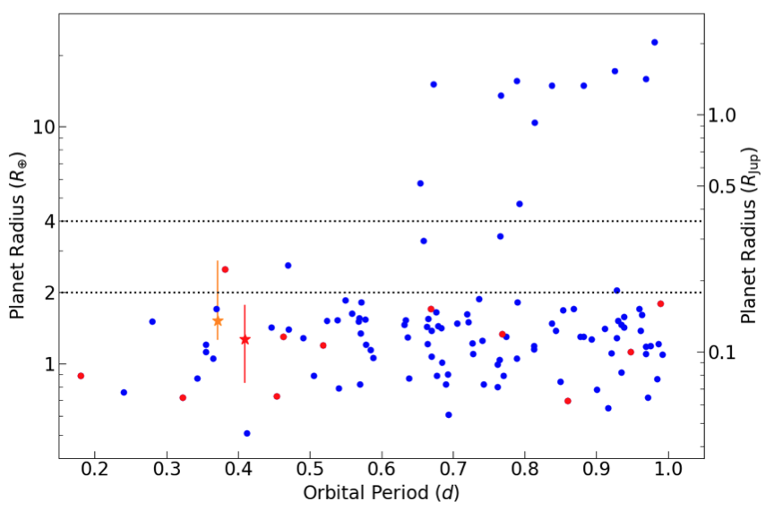
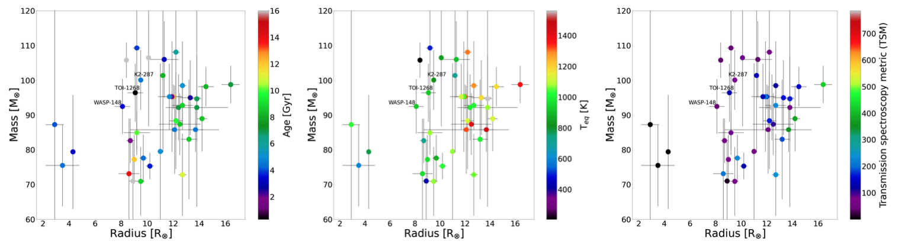
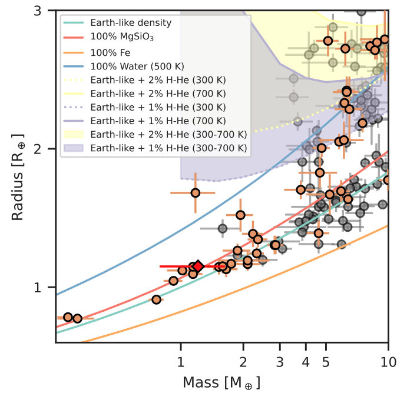

STATUS UPDATE: Orbit 2 of Sector 27 are now available to download as TICA products from MAST.
Welcome TESS followers! This week we are looking at three papers from the archive.
TOI-1442 b and TOI-2445 b: two ultra-short period super-Earths around M dwarfs (Morello et. al., 2022) :
When an exoplanet has an orbit of less than a day it is known as an ultra short period (USP) planet and they are relatively rare. To date 120 USP planets have been confirmed with this paper adding another two, both discovered by TESS. The UPS planets discussed here are TOI-1442 b and TOI-2445 b, which have been examined using light-curves from both TESS and ground-based facilities in addition to radial velocity measurements from Subaru/IRD. These data were used to confirm the planetary natue of the objects and to obtain their physical properties.
TOI-1442 b is a hot super-Earth with an orbital period of 0.409 days, a radius of 1.27R⊕, equilibrium temperature of 1359 K, and a mass less than 18M⊕. TOI-2445 b is a hot super-Earth/mini-Neptune with an orbital period of 0.371 days, a radius of 1.52R⊕, equilibrium temperature of 1332 K, and a mass less than 38M⊕.
TOI-1268b: the youngest hot Saturn-mass transiting exoplanet (Šubjak et. al., 2022) :
In this paper the authors report on the discovery of Saturn-mass planet known as TOI-1268b orbiting a K-dwarf host star. The planet is the youngest Saturn-mass planet know to date with an age of ~1Gyr.
The planet has an eccentric orbit with e = 0.092, an orbital period of 8.158 days. Combining TESS data with high-resolution spectra from the Tautenburg and Ondrejov observatories the authors derive a mass of 96.4 M⊕ and a radius of 9.1 R⊕.
The host star has a mass of 0.96 M⊙, a radius of 0.92 R⊙, an effective temperature of 5300 K, and a metallicity of 0.36 dex.
Discovery and mass measurement of the hot, transiting, Earth-sized planet GJ 3929 b (Kemmer et al., 2022) :
GJ 3929 b is a hot Earth sized planet which orbits an M3.5 V dwarf star with a J-band magnitude of 8.7, which was observed in TESS sectors 24 and 25. Using these TESS data in combination with spectra from CARMENES and additional transit follow-up observations from SAINT-EX, LCOGT, and OSN, the authors determine a planet radius of 1.150 R⊕, a mass of 1.21 M⊕, an orbital period of 2.62 days, and a density of 4.4 g cm-3. This density is similar to that of the Earth's mean density at ~5.5 g cm-3.
The radial velocity data of the system also indicated that there may be another planet in the system with an orbital period of 14.3 days. See the paper for more information about the system.

Fig. 1: Taken from Morello et. al., (2022). Planetary radius vs. orbital period for the known USP planets, based on the same data of Figure 1 in the paper. Planets around M dwarfs are colored in red. The red and orange stars correspond to TOI-1442 b and TOI-2445 b, based on the final results of our analysis.

Fig. 2: Taken from Šubjak et. al., (2022). The population of known planets within the mass interval 70–110 M⊕. The position of TOI-1268b is highlighted together with two planets sharing similar properties. The left subplot is colored with respect to the age of the systems (the grey color is used for systems without an age estimate in literature), the middle one with respect to the equilibrium temperature of the planets, and the right one with respect to the transmission spectroscopic metric.

Fig. 3: Taken from Kemmer et. al., (2022). Mass-radius diagram of well-characterized planets with R < 3 R⊕ and M < 10M⊕. The plot shows the planets from the TEPcat catalogue (Southworth 2011, visited on 8 November 2021) with ∆M and ∆R<30%. Planets with host star temperatures Teff < 4000 K are shown in orange, and planets with hotter hosts are shown in grey. GJ 3929 b is marked with a red diamond. Additionally, theoretical mass-radius relations from Zeng et al. (2019) are shown for reference.